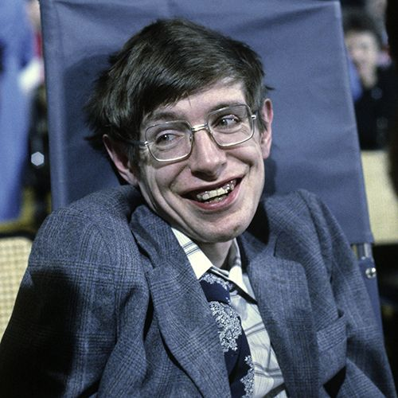
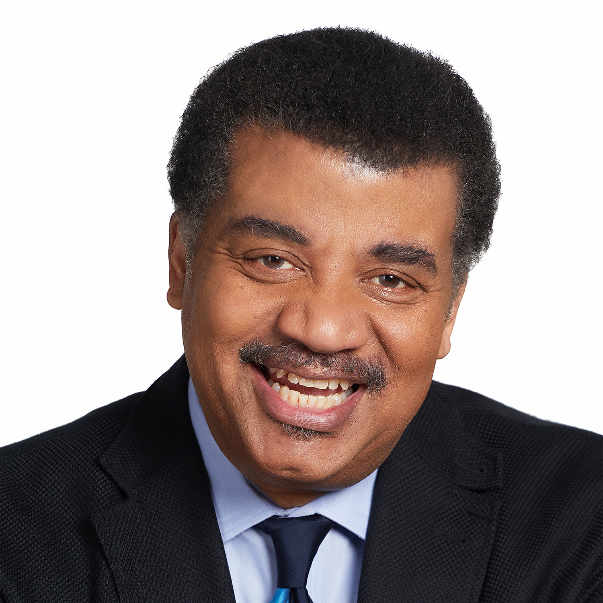

| Faculty |
Contact |
Bio |
Picture |
| Mark Zuckerberg |
(920) - 132 - 1221 |
Mark Zuckerberg was born May 14, 1984, White Plains, New York, U.S. American computer programmer who was cofounder and CEO of Facebook, a social networking website. After attending Phillips Exeter Academy, Zuckerberg enrolled at Harvard University in 2002. On February 4, 2004, he launched thefacebook.com (renamed Facebook in 2005) |
 |
| Elon Musk |
(187) - 131 - 1111 |
Elon Musk was born June 28, 1971, Pretoria, South Africa South African-born American entrepreneur who cofounded the electronic-payment firm PayPal and formed SpaceX, maker of launch vehicles and spacecraft. |
|
| Stephen Hawking |
(278) - 122 - 0193 |
Stephen Hawking was born January 8, 1942, Oxford, Oxfordshire, England—died March 14, 2018, Cambridge, Cambridgeshire, English theoretical physicist whose theory of exploding blackholes drew upon both relativity theory and quantum mechanics. He also worked with space-time singularities. |
 |
| Neil deGrasse Tyson |
(363) - 107 - 2738 |
Born in New York City on October 5, 1958, Tyson discovered his love for the stars at an early age. When he was nine, he took a trip to the Hayden Planetarium at the Museum of Natural History where he got his first taste of star-gazing. Tyson later took classes at the Planetarium and got his own telescope. As a teenager, he would watch the skies from the roof of his apartment building. An excellent student, Tyson graduated from the Bronx High School of Science in 1976. He then earned a bachelor's degree in Physics from Harvard University |
 |
| Bill Gates |
(389) - 109 - 7577 |
Gates was born William Henry Gates III on October 28, 1955, in Seattle, Washington. Gates grew up in an upper-middle-class family with his older sister, Kristianne, and younger sister, Libby. Their father, William H. Gates Sr., was a promising, if somewhat shy, law student when he met his future wife, Mary Maxwell. She was an athletic, outgoing student at the University of Washington, actively involved in student affairs and leadership. |
 |